国際だるやなぎ会議、無事に終わりました！
公開日：
すっかり遅くなりましたが……国際だるやなぎ会議、無事に終わりました！ 会場を手配してくださった @kiyokura さんには本当にお礼を申し上げたいです。また、口ばかりで腰の重い僕のおしりに火をつけてくれた @you_and_i さん、@bonprosoft 君にも感謝してもしきれません。セッションを担当してくださった方々、わざわざ会場までお越しくださった参加者の方も、ありがとうございました！
いざ、岡山へ
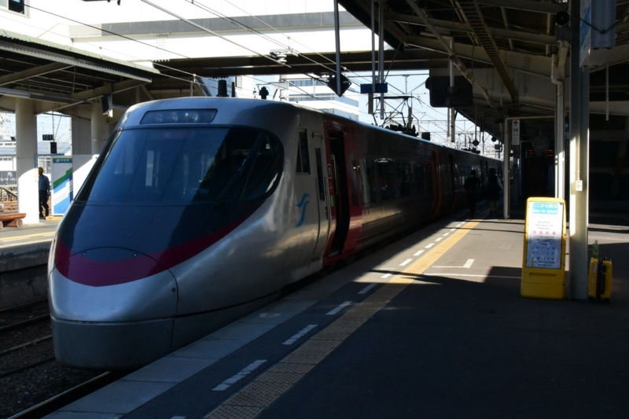
8時ごろかな、のんびり家を出発。松山駅に8時半ごろついたのですが……岡山行き直通の特急は1時間に1本の由。ちゃんと調べてなかったので、松山駅で45分ほど待つ羽目になりました。
今回乗ったのは特急しおかぜ・いしづち。「しおかぜ」が岡山行きで、「いしづち」が高松行き。途中の宇多津（坂出の手前）までは連結して、そのあとは離れ離れに目的地に向かいます。もちろん、僕は「しおかぜ」のほうの車両に。
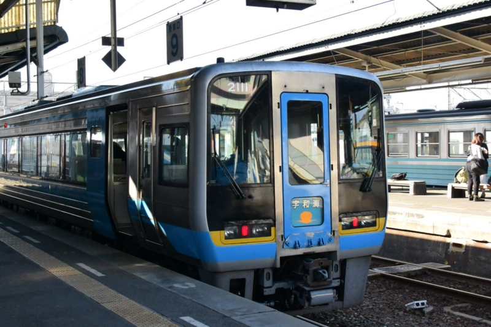
同じホームの宇和島側には、この前お世話になった「宇和海」さんがいました。
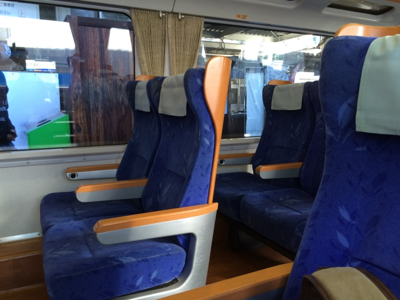
車内の様子。足置きもちゃんとあって、座り心地は悪くありません。帰りの列車はディーゼルだったのかな？ そっちは振動があってちょっとしんどい。
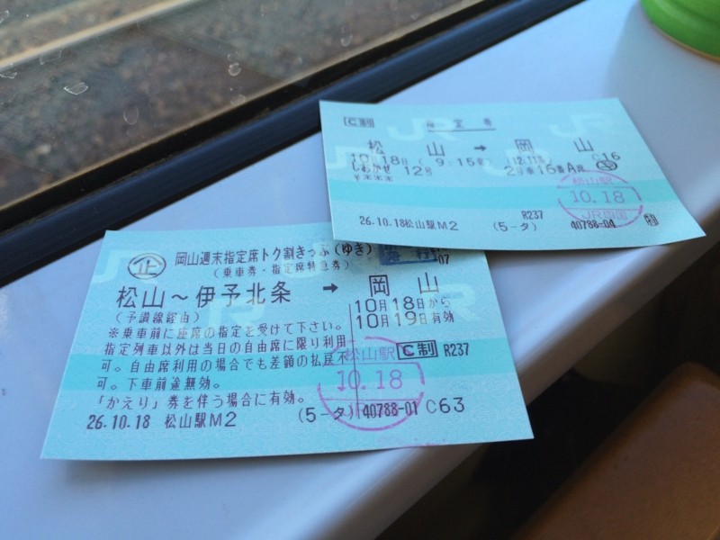
運賃は往復で8,000円ちょっと。休日に往復で買うと、特急の指定席付きでこのお値段。ちょっとお得かな。金券ショップで買えばもっと安いそうですが、今回は初めてということで、みどりの窓口で買いました。
――ちなみに、帰りの指定席は岡山駅で予約する仕組みです……が、指定席がいっぱいで自由席に乗る羽目になりました。まぁ、座れたのでいいのですが、指定席をとるのは早めのほうがよさそうです。
岡山までの所要時間は、3時間ちょっと。新幹線なら東京から神戸あたりまで行けるかも。
大都会・岡山
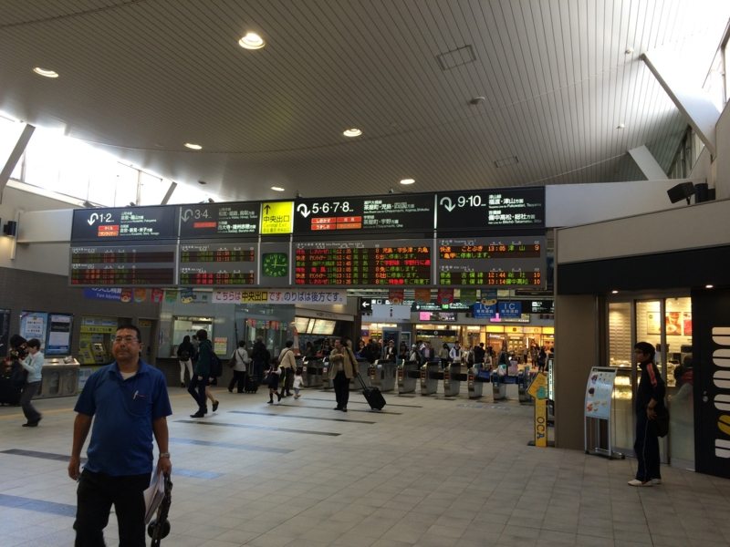
12時過ぎ、岡山駅到着。さすが大都会、ちゃんと自動改札がある！ 山陽・山陰・四国のハブになっているだけあって、行先の案内板も電光掲示になっていて、6本も電車の発着が表示されている。――圧倒的大都会力！！
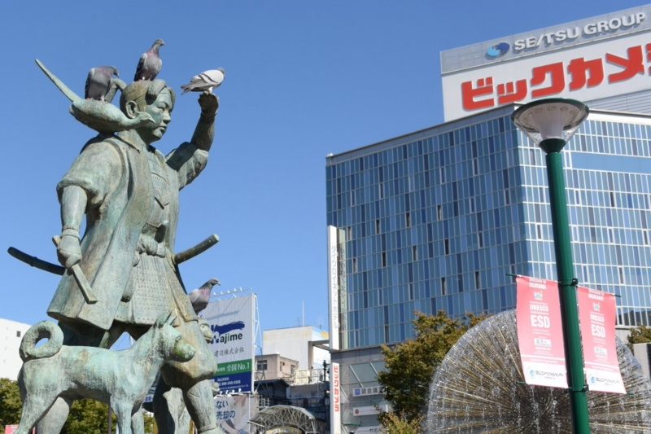
岡山駅の前には桃太郎の銅像が。東京の西郷さんやハチ公と同様、郷土の英雄として敬われているようです。
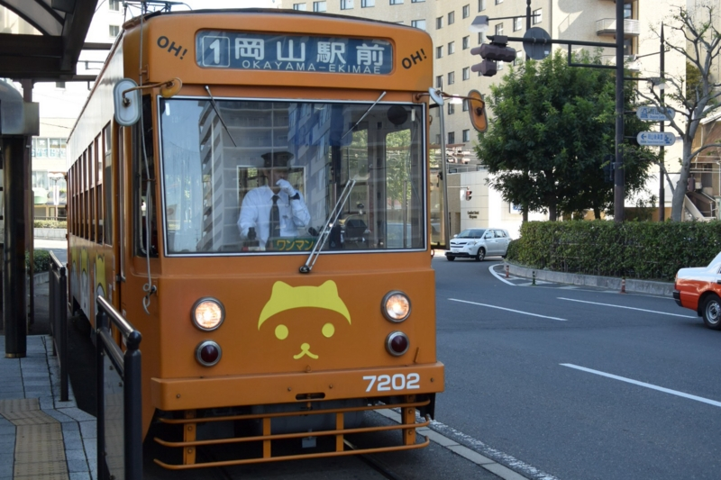
岡山駅からはちんちん電車に乗って、県庁前まで。料金は100円で、後払いです。ちんちん電車の車両は、伊予鉄よりちょっと全長が長いのかなーって感じ。
国際だるやなぎ会議の会場、岡山県立図書館
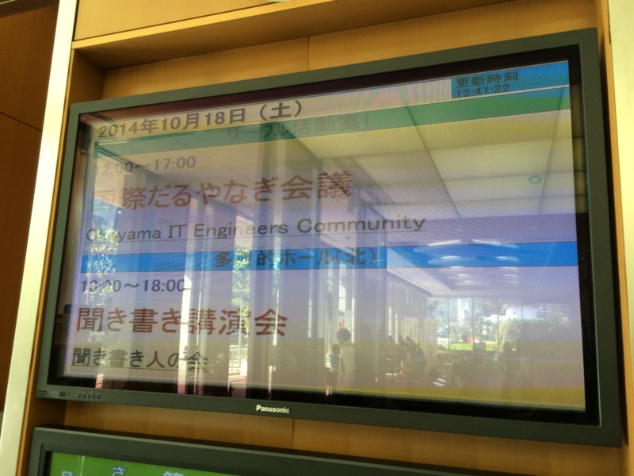
国際だるやなぎ会議の会場、岡山県立図書館に到着。電光掲示板にデカデカと“国際だるやなぎ会議”と書かれていたのがだいぶ恥ずかしかったです。会場をとってくれた @kiyokura さんはもっと恥ずかしかったと思います。
基調講演
基調講演は不肖 @daruyanagi が担当させていただきました。内容は……思い出したくありません。
- アースドリルの動かし方
- 三重県名張市のちょっとした歴史
を持って帰っていただければ嬉しいかなと思います。
「だるやなぎアプリの開発（仮）」
わざわざ仙台から駆けつけてくれた @bonprosoft 君によるセッション。ちょっと遅刻したけれど、みんな生暖かく見守っていました。
Web アプリに、Kinect アプリ。だるやなぎをふんだんに使ったアプリの数々に圧倒されっぱなし。その貴重な時間をもっと有意義に使えば、人類の情報技術は数段進歩したに違いありません。
才能の無駄遣い、とってもいいと思います。
「ブラウザだけでWeb開発！ monacoの使い方」
@kiyokura さんによる monaco についてのセッション。
monaco はとっても便利で、たとえばこの前 Twitter が突如 SSL 3.0 サポートをやめたせいで Twitter BOT が死んだという事件があったのですが、monaco でちょちょいと治せました。これまでは WebMatrix を使っていたのだけど、たまたま（？）ご機嫌ななめで起動しなかったのです。
monaco があってよかった……というか、WebMatrix が不要にならないか心配です。やっぱりローカルでテストしたいっていう需要はあるはずだし、これからもサポートしていってほしいんですけどね。
Windows App Studio の話は、@jz5 とかぶったのでそっちの担当になりました。
「だるやなぎデザインの考察とその実践」
XAML の魔法使い @mitsuba_tan のセッション。
だるやなぎのデザインがなぜこんなにも人を惹きつけるのか――僕はまったく考えたことがなかったのですが、（1）シンプルかつユニークな造形（2）三色しか使ってない、よって（3）再現性が高い（≒誰でも描ける）という分析にはついつい納得してしまいました。
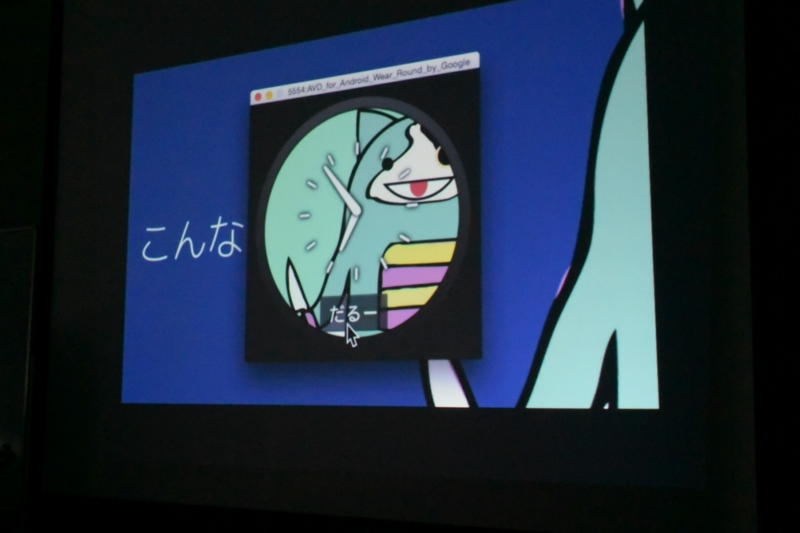
そして、妖怪だるやなぎウォッチ on moto360 でその理論を実践。これで女子高生だけでなく子どもにも大人気だ！
ちょっと moto360 がほしくなってしまいましたね……5万円以上と、少しお高いので無理ですが。もう少し電池が長持ちして、3万円ぐらいになったら本気で考えちゃうかも。
「だるやなぎよ フリーであれ」
@jz5 のセッション。もうとっくにフリーじゃねえか！ と突っ込みを入れたい気分で聞いていました。
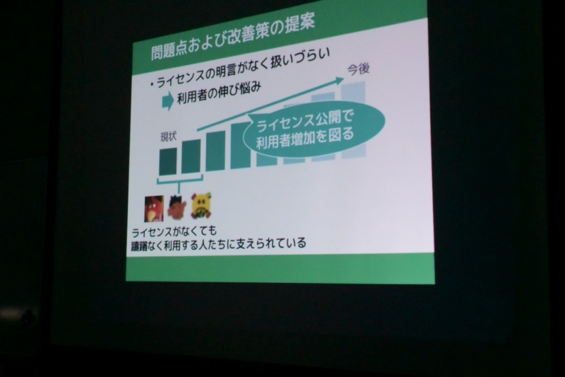
要約すると、「ライセンスがちゃんと決まっていないので使いにくいので……」
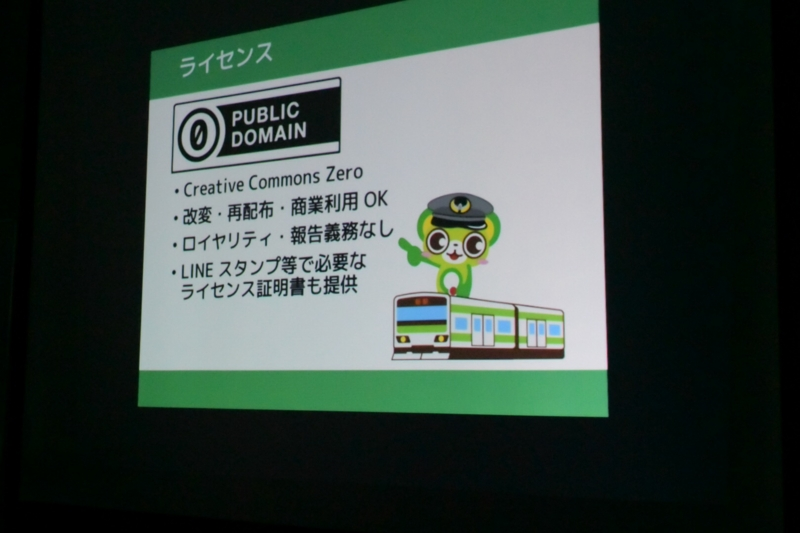
「Creative Commons ZERO というライセンスにしろ」という話のようです。無茶いうな……。ちなみに、だるやなぎのライセンスは“NYSL（煮るなり焼くなり好きにしろライセンス）”にする方向で調整中です。
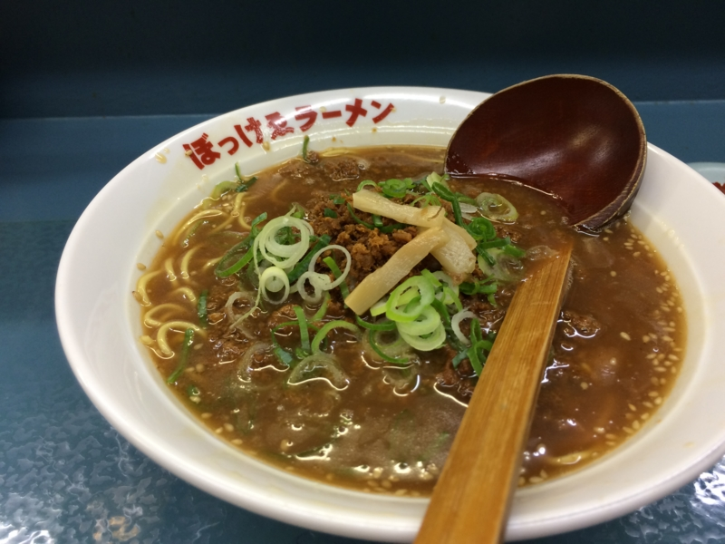
そのあとは、ライトニングトーク（PS Mobile の話とか、@okuzawats さんの Raspberry Pi を自転車にくっつけて Web カメラから Twitter へ画像を登校したりする話ｗ）と懇親会。さいごは @kiyokura さんおすすめのおいしいビールの店とぼっけゑラーメンの店をはしごして占めました。
みなさん、お疲れ様です！
国際だるやなぎ会議のプレゼント
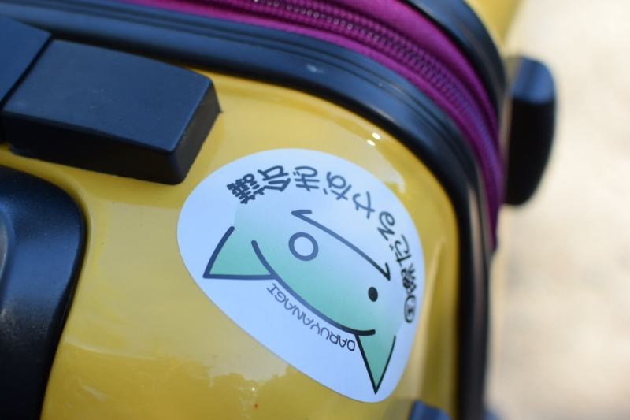
国際だるやなぎ会議ステッカー
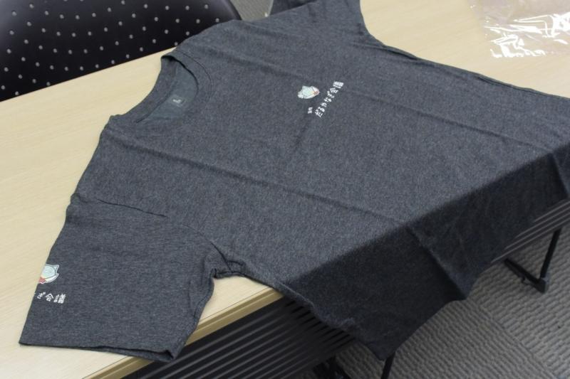
国際だるやなぎ T シャツ
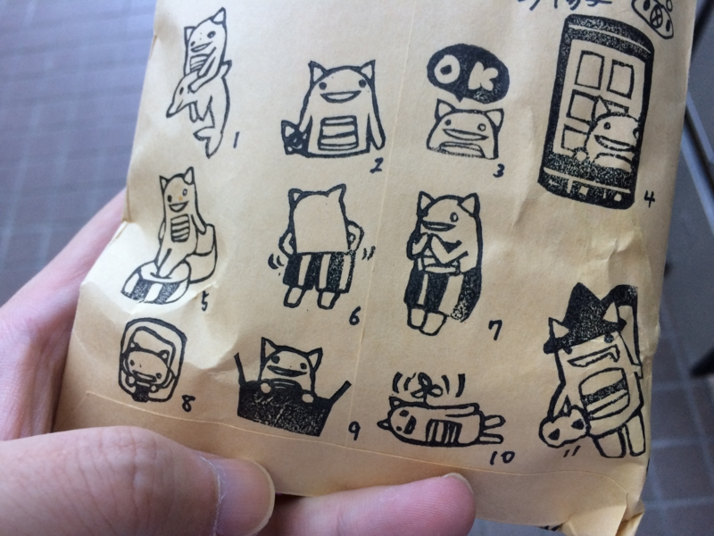
だるやなぎ消しゴムはんこ。
@kmhiyo さんに作ってもらった消しゴムはんこが一番人気だったみたいで、あっという間になくなりました。
このプレゼントは、マスコットアプリ文化祭 2014 (Mascot Character Apps Contest) の“だるやなぎ部門”でもゲットできるかもしれないです。ほしい人（いるのか？）は急げ！
関連エントリー